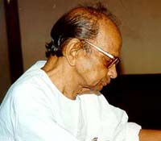

|

Select page numbers to listen Readings:
- Pheria.
Kataka : Granthamandira, 1989.
(Originally published in 1947).
Realmedia excerpt:
pp. 1-10
MP3 excerpt:
pp. 1-10
- Parakalama.
Kataka : Janasakti Pustakalaya, 1984.
(Originally published in 1955).
Realmedia excerpt:
pp. 34-41
MP3 excerpt:
pp. 34-41
- Sei phula.
1 ed. Kataka : Granthamandira, 1989.
Realmedia excerpt:
pp. 16-19
MP3 excerpt:
pp. 16-19
|
A pioneer in the history of Oriya drama,
Gopal Chhotray is a keen observer and witness of all special features
of Orissan society and tradition. He is credited with having revived the
Geetinatya or ‘plays in verses' genre in Orissa in late forties that
ushered a renewed interest in the rich Orissan performing arts. An intrinsic
quality of his plays lies in the manner in which the speech of the actor is
laced with satire and humor. This endearing element has equally connected
him with not only his intellectual mates but also the common man on the
street.
He had a long association with the All India Radio, Cuttack, Orissa and
went on to write many memorable plays, operas, short-plays and screenplays
and 8 of them have been translated into Hindi, English and Telugu.He is a
recipient of both central Sahitya Akademi and state Sahitya Akademi awards
and has also translated major Hindi, Marathi and Gujarati plays into Oriya.
His important works are: Sahadarmini (1941),
Panchanatika (1993), Na Pahu Rati (1971),
Kapatapasha (1989), Hasyarasara nataka (1981), and
Babu Candramani (1992).
|